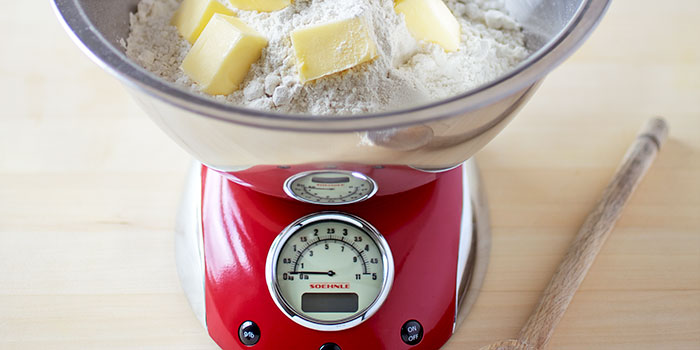

|  | Unlike lots of American recipes that use cups, most UK recipes use grams and millilitres. Measuring ingredients to the dot is extra important when you are baking so if you are a cake fan or have a super precise approach to cooking, a set of scales is essential. |